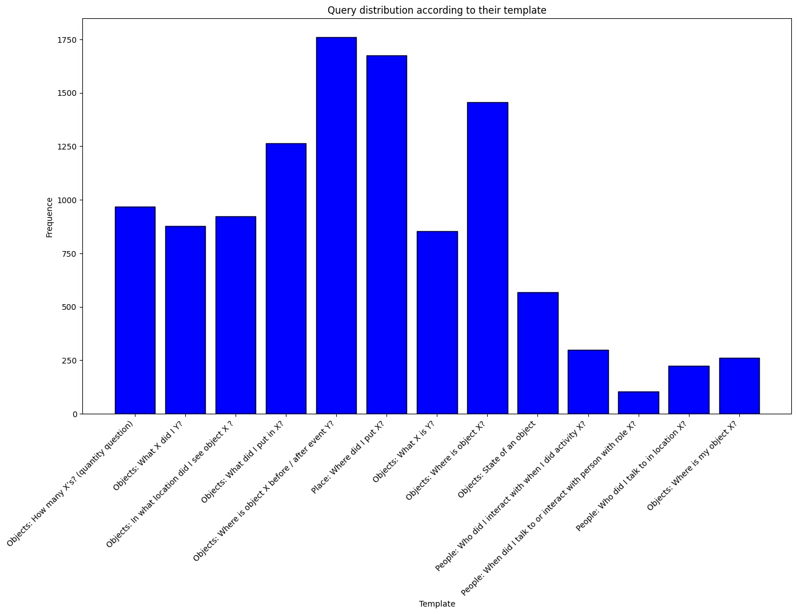
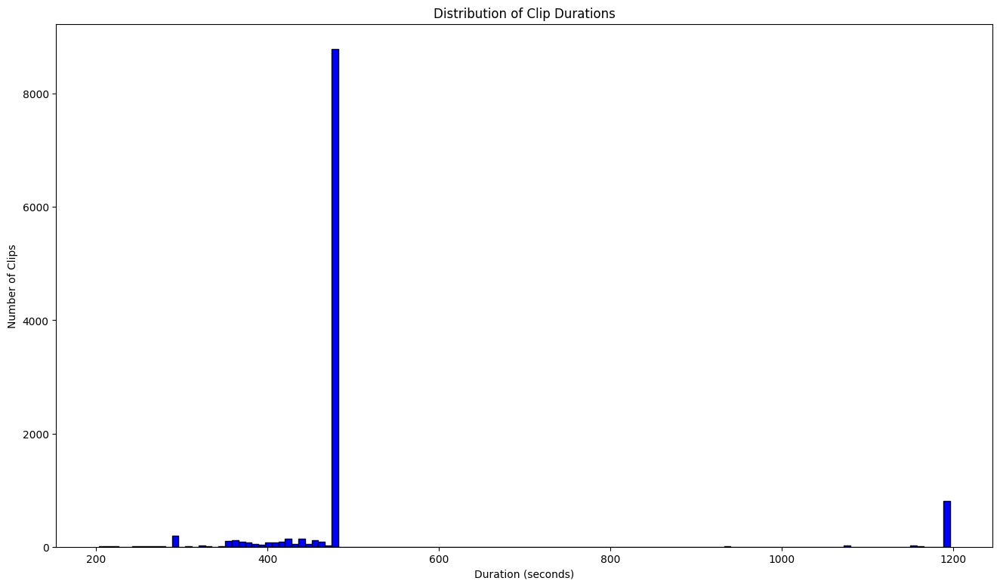
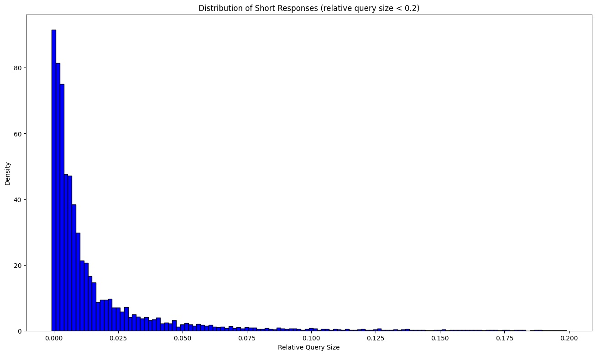

LLM-Supervised Video Temporal Grounding
Temporal grounding means finding the moment in a video that answers a question. Writing those questions by hand is slow, so we had an LLM write them.
- Role
- Team lead, 3 members
- Context
- Advanced Machine Learning, Politecnico di Torino
- Team
- Andrea Ongaro, Davide Ravidà, Paola Verrone
- Stack
- PyTorch, Gemma, VSLNet, EgoVLP, Omnivore, GloVe, BERT

Overview
We gave Gemma the narrations of egocentric videos and asked it for natural-language questions about them. We pretrained VSLNet on those generated questions, then fine-tuned it on frozen EgoVLP and Omnivore features.
The code is four notebooks: feature extraction and training (with GloVe or BERT for the text), narration processing, question generation with Gemma, and fine-tuning. A couple of small scripts merge and clean the generated files.
Results
With LLM-written questions, GloVe embeddings did better than BERT.
Looking at the data

